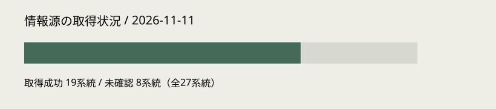

HW3 + HW4 · AUTOMATED SOURCE MONITOR
2026.11.11｜Tesla FSD・世界の自動運転とオーナーニュース
FSD・世界の自動運転・購入・充電などの27系統中、19系統を取得。取得できなかった情報も明示します。

Darin Caggiano / Wikimedia Commons · CC BY-SA 4.0 · 縮小版。表示枠に合わせたトリミングあり。
これは取得結果の日本語レポートです。海外見出しは未検証の報道案内。国内の解禁・在庫・開業を自動認定する記事ではありません。
今回検出した更新
Spigen公式 Teslaアクセサリー：出典内容の変更候補
ページの共通部分やPDF差し替えも含むため、制度・価格・機能の変更内容は未判定。最新の原文確認が必要です。
公式発表・海外報道への入口
初回取得時の見出しは既存の参考記事です。見出しの掲載順と公開日は原文で確認してください。過去記事の再配信もあり得ます。
- 世界の自動運転／未検証 · 新規検出/C O R R E C T I O N - Consumer Technology Association/ - 共同通信PRワイヤー世界の自動運転報道の発見用RSS / 原文公開日 Wed, 11 Nov 2026 01:30:26 GMT
- 世界の自動運転／未検証 · 新規検出NVIDIA、自動運転向けAlpamayo 2 Edgeの重みを公開 - Unite.AI世界の自動運転報道の発見用RSS / 原文公開日 Tue, 10 Nov 2026 18:55:02 GMT
- 世界の自動運転／未検証 · 新規検出テスラ、サンアントニオでロボタクシー開始―約712平方キロのエリアでWaymoと競合 - 財経新聞世界の自動運転報道の発見用RSS / 原文公開日 Tue, 10 Nov 2026 04:48:00 GMT
- 世界の自動運転／未検証 · 新規検出Kakao Mobility、NVIDIAとレベル4自動運転で協業 TeslaはCybertruck縮小と欧州・英国FSD見直し - 디지털투데이世界の自動運転報道の発見用RSS / 原文公開日 Tue, 10 Nov 2026 22:30:00 GMT
- 海外報道・未検証 · 新規検出Tesla Says “Private FSD Only For Robotaxi.” A Legal Flaw May Say Why - Forbes世界FSD報道の発見用RSS / 原文公開日 Tue, 10 Nov 2026 13:30:00 GMT
- 海外報道・未検証 · 新規検出"It's Thinking Too Fast": Tesla FSD Put to Wild Traffic Test To See If It Crashes - Yahoo Autos世界FSD報道の発見用RSS / 原文公開日 Tue, 10 Nov 2026 17:52:05 GMT
- 海外報道・未検証 · 新規検出Stuck in the Joseon Dynasty? Tesla owners flood land minister's posts with complaints about FSD ban…世界FSD報道の発見用RSS / 原文公開日 Tue, 10 Nov 2026 15:02:47 GMT
- 海外報道・未検証 · 新規検出SpaceX unveils Starlink Mini 2 satellite broadband terminal with built-in battery and Wi-Fi support…世界FSD報道の発見用RSS / 原文公開日 Tue, 10 Nov 2026 20:50:05 GMT
- 規制当局・原文確認 · 新規検出AI Horizons PGH Summit - NHTSA | National Highway Traffic Safety Administration (.gov)規制当局の関連発表（RSS発見） / 原文公開日 Thu, 29 Oct 2026 23:18:23 GMT
- 規制当局・原文確認 · 新規検出ODI RESUME - NHTSA | National Highway Traffic Safety Administration (.gov)規制当局の関連発表（RSS発見） / 原文公開日 Fri, 06 Nov 2026 08:00:00 GMT
- 規制当局・原文確認 · 新規検出Part 573 Safety Recall Report 26V728 - NHTSA | National Highway Traffic Safety Administration (.gov)規制当局の関連発表（RSS発見） / 原文公開日 Thu, 05 Nov 2026 15:21:52 GMT
- 購入・補助金／未検証 · 新規検出ＥＶ独自補助金、テスラは縮小・ＢＹＤは継続 - NNAアジア日本のTesla購入・補助金の報道発見 / 原文公開日 Tue, 10 Nov 2026 15:00:00 GMT
- 購入・補助金／未検証 · 新規検出【ECOライフホーム】テスラ新世代家庭用蓄電池 Powerwall 3 の本格発売開始。補助金申請を含めた導入サポートをワンストップで提供 - イザ！日本のTesla購入・補助金の報道発見 / 原文公開日 Tue, 10 Nov 2026 01:00:00 GMT
- 購入・補助金／未検証 · 新規検出自動車業界 ニュースの見方 第69回 国内EV販売が過去最高! 下期の主役は軽EV? ラッコとe SKYが直接対決 - Infoseek日本のTesla購入・補助金の報道発見 / 原文公開日 Tue, 10 Nov 2026 23:00:00 GMT
- 購入・補助金／未検証 · 新規検出Facebook's Zuckerberg to review content policies after backlash - Reuters日本のTesla購入・補助金の報道発見 / 原文公開日 Tue, 10 Nov 2026 09:28:07 GMT
- アクセサリー／未検証 · 新規検出どでかいテスラの16インチ画面も一人で貼れる！ 映り込みや反射を抑える専用保護フィルムがすごい - ベストカーWebTesla用アクセサリー新着の発見 / 原文公開日 Tue, 10 Nov 2026 10:00:00 GMT
日本のオーナーへの確認ポイント
HW3・HW4とも、海外の提供開始・価格・バージョンを国内条件へ直接適用しないでください。在庫は公式商品画面、新しい充電拠点は公式詳細と車内地図を確認します。国内の開始時期を推定できる新たな根拠は、この定型レポートでは認定していません。
購入前・オーナー向け：今日の確認ポイント
購入特典は対象車・期限・残枠、補助金は登録日別の額・申請期限・予算終了見込みを分けて確認。FSDはHWと契約、アップデートは日本向け配信条件を確認します。アクセサリーは車両世代・実寸・国内販売条件を照合します。
本日のモデル別・年式別中古相場
元データ：カーセンサーの公開相場表。価格帯ごとの分布から中央値の所属範囲を求めたものです。グレード・距離・修復歴の構成をそろえた指数ではありません。
カーセンサー Model 3 掲載価格相場
取得 2026-11-11T11:38:08+09:00 / 掲載 189台。出典：掲載価格分布 ↗
| 登録年の区分 | 掲載台数 | 中央値が属する範囲（本体価格） | 注意 |
|---|---|---|---|
| 2019年 | 13台 | 205万円以上〜225万円未満 | 掲載価格・成約価格ではない |
| 2020年 | 19台 | 185万円以上〜205万円未満 | 掲載価格・成約価格ではない |
| 2021年 | 71台 | 225万円以上〜245万円未満 | 掲載価格・成約価格ではない |
| 2022年 | 60台 | 265万円以上〜285万円未満 | 掲載価格・成約価格ではない |
| 2023年 | 8台 | 385万円以上〜405万円未満 | 少数標本（10台未満） |
| 2024年 | 12台 | 365万円以上〜405万円未満 | 掲載価格・成約価格ではない |
| 2025年 | 5台 | 425万円以上〜445万円未満 | 少数標本（10台未満） |
国内導入前の年式区分 1台を表から除外。入力誤りや並行輸入を自動判定していません。
カーセンサー Model Y 掲載価格相場
取得 2026-11-11T11:38:08+09:00 / 掲載 146台。出典：掲載価格分布 ↗
| 登録年の区分 | 掲載台数 | 中央値が属する範囲（本体価格） | 注意 |
|---|---|---|---|
| 2022年 | 51台 | 275万円以上〜295万円未満 | 掲載価格・成約価格ではない |
| 2023年 | 49台 | 295万円以上〜315万円未満 | 掲載価格・成約価格ではない |
| 2024年 | 12台 | 375万円以上〜395万円未満 | 掲載価格・成約価格ではない |
| 2025年 | 28台 | 495万円以上〜515万円未満 | 掲載価格・成約価格ではない |
| 2026年以降 | 6台 | 515万円以上〜555万円未満 | 少数標本（10台未満） |
カーセンサー Model S 掲載価格相場
取得 2026-11-11T11:38:08+09:00 / 掲載 25台。出典：掲載価格分布 ↗
| 登録年の区分 | 掲載台数 | 中央値が属する範囲（本体価格） | 注意 |
|---|---|---|---|
| 2014年 | 2台 | 0万円以上〜180万円未満 | 少数標本（10台未満） |
| 2015年 | 2台 | 300万円以上〜460万円未満 | 少数標本（10台未満） |
| 2016年 | 3台 | 220万円以上〜240万円未満 | 少数標本（10台未満） |
| 2017年 | 1台 | 200万円以上〜220万円未満 | 少数標本（10台未満） |
| 2018年 | 6台 | 320万円以上〜380万円未満 | 少数標本（10台未満） |
| 2019年 | 1台 | 240万円以上〜260万円未満 | 少数標本（10台未満） |
| 2020年 | 5台 | 420万円以上〜440万円未満 | 少数標本（10台未満） |
| 2021年 | 1台 | 560万円以上〜580万円未満 | 少数標本（10台未満） |
| 2023年 | 4台 | 880万円以上 | 少数標本（10台未満） |
カーセンサー Model X 掲載価格相場
取得 2026-11-11T11:38:08+09:00 / 掲載 44台。出典：掲載価格分布 ↗
| 登録年の区分 | 掲載台数 | 中央値が属する範囲（本体価格） | 注意 |
|---|---|---|---|
| 2016年 | 1台 | 0万円以上〜285万円未満 | 少数標本（10台未満） |
| 2017年 | 15台 | 385万円以上〜405万円未満 | 掲載価格・成約価格ではない |
| 2018年 | 8台 | 465万円以上〜485万円未満 | 少数標本（10台未満） |
| 2019年 | 4台 | 405万円以上〜545万円未満 | 少数標本（10台未満） |
| 2020年 | 11台 | 525万円以上〜545万円未満 | 掲載価格・成約価格ではない |
| 2021年 | 1台 | 685万円以上〜705万円未満 | 少数標本（10台未満） |
| 2023年 | 4台 | 1025万円以上〜1105万円未満 | 少数標本（10台未満） |
この日の取得状況

| 情報源 | 状態 | 確認時刻 |
|---|---|---|
| 世界の自動運転報道の発見用RSS | 取得成功 | 2026-11-11T11:38:08+09:00 |
| 国交省 車両安全対策検討会 | 取得成功 | 2026-11-11T11:38:08+09:00 |
| Waymo日本 公式FAQ | 取得成功 | 2026-11-11T11:38:08+09:00 |
| 日産 次世代ProPILOT 公式 | 取得成功 | 2026-11-11T11:38:08+09:00 |
| Tesla Japan 公式発表 | 取得成功 | 2026-11-11T11:38:08+09:00 |
| 世界FSD報道の発見用RSS | 取得成功 | 2026-11-11T11:38:08+09:00 |
| FSD 世界提供地域（Tesla公式） | 未確認 / アクセス制限により自動取得できません | 2026-11-11T11:38:08+09:00 |
| FSD 米国価格・機能（Tesla公式） | 未確認 / アクセス制限により自動取得できません | 2026-11-11T11:38:08+09:00 |
| オランダRDW：FSD承認の公式説明 | 取得成功 | 2026-11-11T11:38:08+09:00 |
| 規制当局の関連発表（RSS発見） | 取得成功 | 2026-11-11T11:38:08+09:00 |
| 米国NHTSA TeslaリコールAPI / Model Y 2026 | 取得成功 | 2026-11-11T11:38:08+09:00 |
| 日本Supercharger公式一覧 | 未確認 / アクセス制限により自動取得できません | 2026-11-11T11:38:08+09:00 |
| モバイルコネクター公式商品 | 未確認 / アクセス制限により自動取得できません | 2026-11-11T11:38:08+09:00 |
| ウォールコネクター公式商品 | 未確認 / アクセス制限により自動取得できません | 2026-11-11T11:38:08+09:00 |
| CHAdeMO公式商品（URL存続も確認） | 未確認 / アクセス制限により自動取得できません | 2026-11-11T11:38:08+09:00 |
| 日本公式ショップ充電カテゴリ | 未確認 / アクセス制限により自動取得できません | 2026-11-11T11:38:08+09:00 |
| CEV公式：登録日別・車両別の補助額PDF | 取得成功 | 2026-11-11T11:38:08+09:00 |
| CEV補助金：実施機関のお知らせ | 取得成功 | 2026-11-11T11:38:08+09:00 |
| Tesla日本：現在の購入特典 | 未確認 / アクセス制限により自動取得できません | 2026-11-11T11:38:08+09:00 |
| Spigen公式 Teslaアクセサリー | 取得成功 | 2026-11-11T11:38:08+09:00 |
| 日本のTesla購入・補助金の報道発見 | 取得成功 | 2026-11-11T11:38:08+09:00 |
| Teslaアップデートの報道発見 | 取得成功 | 2026-11-11T11:38:08+09:00 |
| Tesla用アクセサリー新着の発見 | 取得成功 | 2026-11-11T11:38:08+09:00 |
| カーセンサー Model 3 掲載価格相場 | 取得成功 | 2026-11-11T11:38:08+09:00 |
| カーセンサー Model Y 掲載価格相場 | 取得成功 | 2026-11-11T11:38:08+09:00 |
| カーセンサー Model S 掲載価格相場 | 取得成功 | 2026-11-11T11:38:08+09:00 |
| カーセンサー Model X 掲載価格相場 | 取得成功 | 2026-11-11T11:38:08+09:00 |

Nashucks / Wikimedia Commons · CC0 · 縮小版。表示枠に合わせたトリミングあり。

Vauxford / Wikimedia Commons · CC BY-SA 4.0 · 縮小版。表示枠に合わせたトリミングあり。